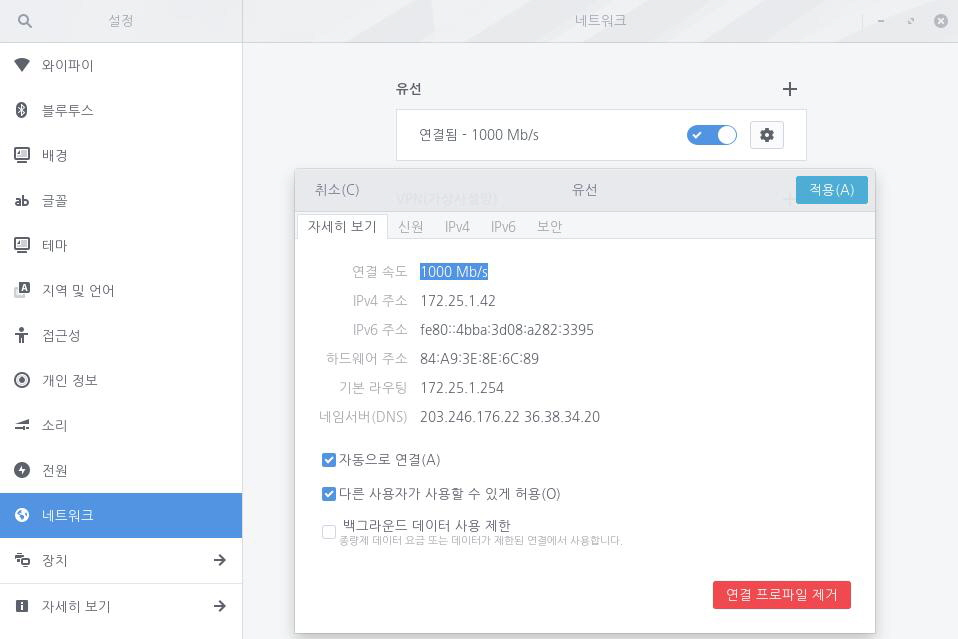
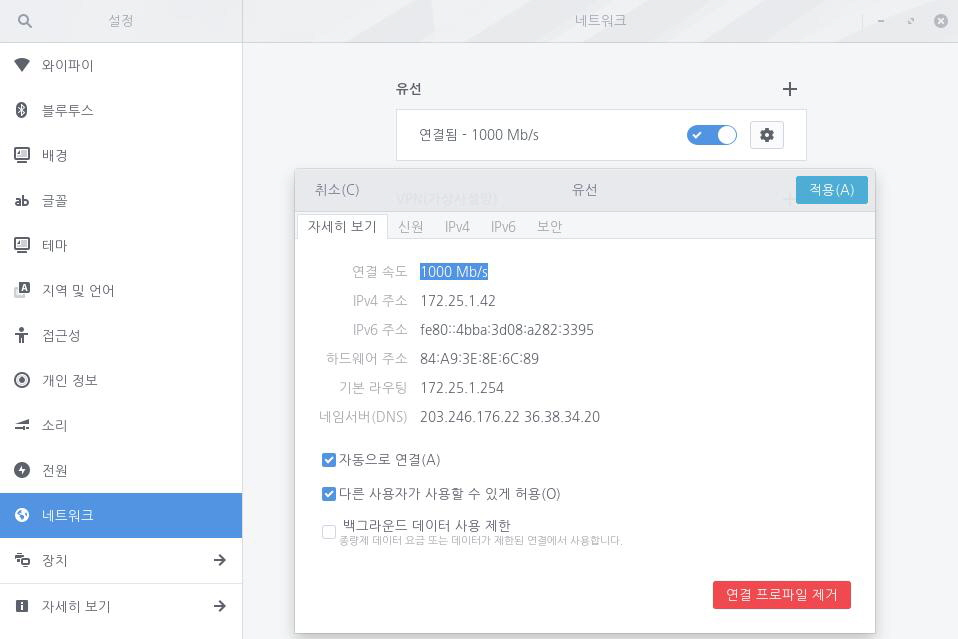

인터넷 연결에 문제가 발생했을 때 이를 손쉽게 해결하려면 IP 주소가 필요합니다. 일반적으로 사용자는 두 개의 IP 주소를 가지고 있습니다. 하나는 인터넷 네트워크의 IP 주소(내부)이고 나머지는 인터넷의 IP 주소(외부)입니다. IP 주소는 다음 단계를 통해 확인할 수 있습니다. 인터넷 네트워크 IP 주소(내부) 확인1. 좌측 하단의 [시작]아이콘을 클릭하고 검색 창에 "설정"을 입력한 후 [설정] 애플리케이션을 실행합니다.
 2-1. 유선 네트워크인 경우 [설정] 애플리케이션 사이드 바에서 [네트워크]를 클릭합니다.
2-1. 유선 네트워크인 경우 [설정] 애플리케이션 사이드 바에서 [네트워크]를 클릭합니다.
 2-2. 와이파이인 경우 [설정] 애플리케이션 사이드 바에서 [와이파이]를 클릭합니다. 3. 연결된 네트워크 옆 [설정] 아이콘을 클릭한 다음 [자세히 보기] 탭에서 IP 주소를 확인합니다. 인터넷 IP 주소(외부) 확인1. whatismyipaddress.com에 접속합니다. 2. 해당 사이트에서 인터넷 IP 주소(외부)를 자동으로 찾아서 보여줍니다.
2-2. 와이파이인 경우 [설정] 애플리케이션 사이드 바에서 [와이파이]를 클릭합니다. 3. 연결된 네트워크 옆 [설정] 아이콘을 클릭한 다음 [자세히 보기] 탭에서 IP 주소를 확인합니다. 인터넷 IP 주소(외부) 확인1. whatismyipaddress.com에 접속합니다. 2. 해당 사이트에서 인터넷 IP 주소(외부)를 자동으로 찾아서 보여줍니다.